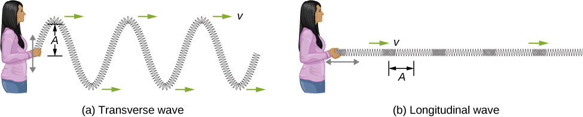
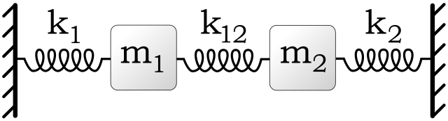
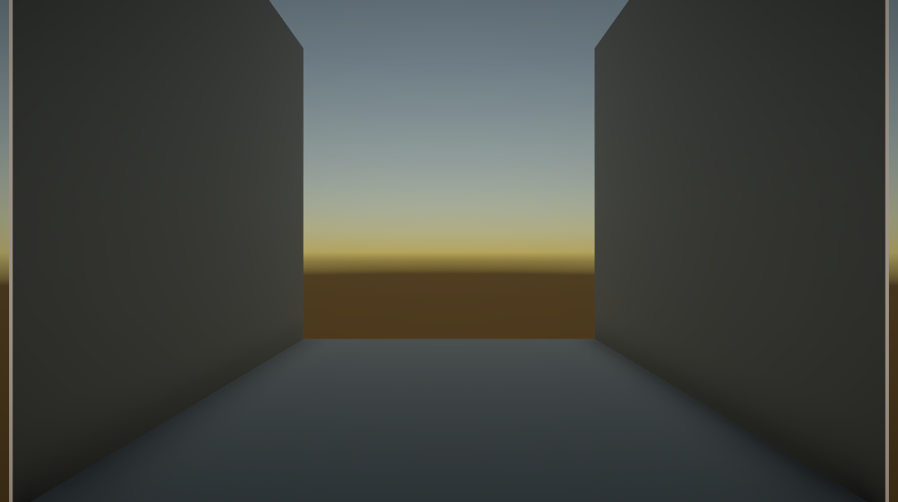
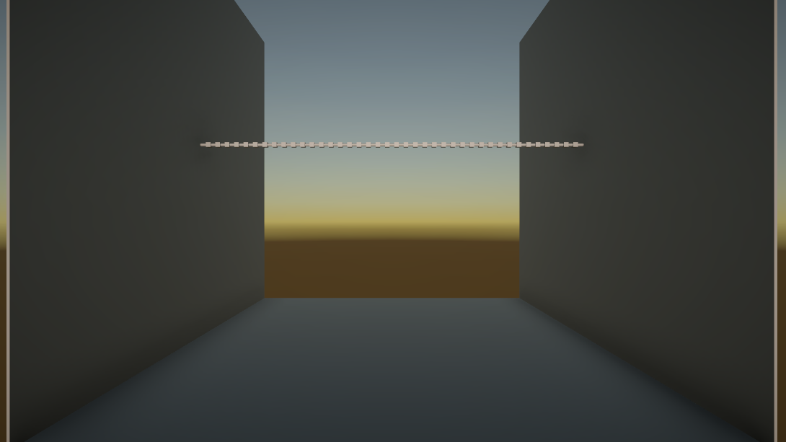
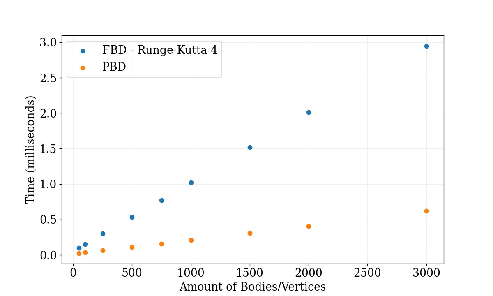

Welcome to my project blog in the DD1354 Models and Simulation course. My name is Azeez Daoud and I
am here to invite you to venture with me in world of WAVES!. There we will encounter
differential equations, numerical analysis, and a whole lot of springs and masses. Together we will
build a system of coupled springs and masses, shake it (A LOT!) to produce two
types of waves: transverse and longitudinal waves. The former propagates through the medium by
displacing it perpendicularly in the direction of its motion. The latter displaces the medium in the
direction of motion. This might seem quite abstract, so here is a figure showing the two types:

A person shaking a spring producing transverse and longitudinal waves. Image from
wikimedia.org.
How do we visualise that? Well, we need 3 ingredients:
Physics
Numerical Analysis
Somewhere to do the simulation
Let us focus on the third point first by choosing a tool to do our simulation. I have decided to use The Unity Game Engine, because it is easy set up and use. The medium
we are going to make waves propagate through will be a rope-like object modelled as a chain of springs
and masses, like in the following figure.

A coupled spring-mass system. Image from
wikimedia.org.
This is called a coupled spring-mass system which we will abbreviate as CSMS, but more on that later. First we need to set up a
few things in Unity:
Springs
Masses
Walls
Masses and walls are fairly easy to set up. Masses will be just an cube with coordinates for position and
velocity (we can actually omit the mass for a reason that will become clear soon). Walls will also be a
cube stretched and compressed to look like plane. We will also create a point on that wall where we can
attach things to it. The most difficult of the three is springs, because they can stretch and compress. How
should we achieve that in Unity? Simply we will attach a script to a cylinder that stores two coordinates
(Transforms in Unity-lingo) it can attach to. Based on the vector between those objects we will stretch,
move and orient that cylinder based on that vector. In the inspector it looks like this
Unity fields for setting the connection points of a spring.
Let's add a couple of cube that move up and down and attach their Transforms to the spring to test that
our stretchiness works.
IT WORKS! What next? Well let us set up a scene where we can do our little experiment. Just
two walls, a floor and some light adjustments should work (we'll maybe make it more
beautiful later on).

The scenery of the experiment in Unity Editor
Alright the stage is set! In the next update we will get our hands dirty with some physics and numerical
integrators!
Update 1 - Let There Be Waves
26th of February 2024
Welcome back! Today's update will be filled with mathematics and physics but the results will hopefully
be
satisfying! Let us begin by creating a CSMS. We create
an object which we will use to generate the CSMS and handle the physics for it. We give it the number of
masses and it subdivides the vector between the walls into small parts in which we will place masses.
Between two masses (or wall and mass) we put a spring whose connection points are the masses. The
results
look like this:

The CSMS generated in the Unity Editor
Alright, now it is time to add some forces on this CSMS. Take any mass at coordinates given by \(X_i =
(x_i, y_i, z_i)^T\) and with mass \(m\) (to avoid confusion I will use 'mass' for the physical property,
and 'body' for the object that is a mass) in the system it will experience a number of forces:
Gravitational Force, given as \(F = -mg\hat{y}\) where \(\hat{y} = (0, 1, 0)^T\), or in other
words
a force pointing downwards (in Unity The y-axis in the up-down axis, so we will use that convention
here too), which is equal to the mass of the object times the gravitational acceleration which on
Earth is \(g \approx 9.81 ms^{-2}\).
Spring Forces, given by Hooke's Law
as \(F_\text{spring} = -k\left[(\lVert\Delta X_{i, i-1}\rVert - R)\frac{\Delta X_{i,
i-1}}{\lVert\Delta X_{i, i-1}\rVert} + (\lVert\Delta X_{i, i+1}\rVert - R)\frac{\Delta X_{i,
i+1}}{\lVert\Delta X_{i, i+1}\rVert}\right]\), where \(\Delta X_{i,j} = X_i - X_j\), \(k\) is the
spring constant and \(R\) is the rest length of the spring. The expression is combined the spring
forces from the springs from both sides of the body. From now on we will reduce the large expression
inside the square brackets to just \(\Delta X_i\).
Damping Forces, given as \(F_\text{damping} = -\gamma \dot{X}_i\), where \(\gamma\) is the
damping factor and \(\dot{X}_i\) is the velocity (first derivative with respect to time) of the
body.
Driving Force, given as \(F_\text{driving} = F_0\cos(\omega_d t)\hat{y}\), which is
essentially a force that is given by a sinusoidal oscillation with amplitude \(F_0\) and angular
frequency \(\omega_d\). For now the driving force is in the \(\hat{y}\)-direction. We can actually
add this in different directions by making \(F_0\) a vector of amplitudes and multiplying by
different cosine functions with different frequencies, and even phases in each axis. We will do
that later on.
How do we combine all these forces? The answer is Newton's Second Law of
Motion:
\[F_\text{total} = m\ddot{X}_i\]
or in other words: the total force on a body is equal to its mass times its acceleration. So, what we get is
the following:
\begin{align*}
F_\text{total} &= F_\text{gravity} + F_\text{spring} + F_\text{damping} + F_\text{driving} = \\
m\ddot{X}_i &= -mg\hat{y} -k\Delta X_i - \gamma\dot{X}_i + F_0\cos(\omega_d t)\hat{y}= \\
\ddot{X}_i &= -g\hat{y} - \frac{k}{m}\Delta X_i - \frac{\gamma}{m}\dot{X}_i + \frac{F_0}{m}\cos(\omega_d
t)\hat{y}
\end{align*}
If we make each body have the same mass then we can forget about the mass and give the parameters to the
simulation as values normalised by the mass. So the equation reduces to:
\[
\ddot{X}_i = -g\hat{y} - \omega^2\Delta X_i - \Gamma\dot{X}_i + \Lambda\cos(\omega_d t)\hat{y}
\]
(the reason the factor in front of \(\Delta X_i\) is \(\omega^2\) is due to solving the equation of motion
of the harmonic oscillator analytically and getting \(\omega = \sqrt{\frac{k}{m}}\) as the natural frequency
in the solution, so we will use that here too)
'Alright, alright,' you may say. 'A non-homogenous second order differential equation‽ How will we solve
that?' Good question! We must delve in the world of Numerical Analysis and ask for the assistance of the
numerical integrators. We could use Euler's Forward
Method but that is not stable enough (yes, it sends everything to everywhere in seconds). How
about the famous Runge-Kutta methods? And more specifically, Runge-Kutta 4? Yes, that works! I won't go
to the details of how the Runge-Kutta methods works, so I refer to the Wikipedia page and the book
Numerical Analysis by Timothy Sauer.
So, we start with that static CSMS, and for every body we do a single Runge-Kutta 4 iteration once each
update (FixedUpdate in Unity with fixedDeltaTime set to 0.005s in order to make the calculations easy
(fixed increments) and stable (small increments)). We do, however, only add the driving force
\(F_\text{driving}\) so the first (leftmost) body, and we will see how the wave propagates. Let us see
the results for the following parameters:
\(g = 0\) (we want to show the effects of oscillation for now)
\(\omega^2 = 100\)
\(\Gamma = 0.5\)
\(\Lambda = 5\)
\(\omega_d = 1\)
THERE! THERE! Do you see that? It is the TRANSVERSE WAVES 🥳! Alright alright, how
about
some gravity?
Let us make
\(g=9.81\)
\(\omega^2 = 10000\) (otherwise gravity wins over the spring forces)
\(\Gamma = 1\) (for the same reason as above, and since gravity will increase the velocity by a lot
quickly, so we need to damp it down)
Let us also start with \(\Lambda = 0\) to let gravity do its work in the beginning. Thereafter, we will make
\(\Lambda = 500\). We will also start with \(\omega_d = 1\) then increment it by 1 thrice and notice
some interesting wave-pattern emerging.
Oh! The wave are standing still in their place rather than propagate forward, and every time we
increment the integer values of the frequency the number of peaks (called antinodes) seem to
increase by one... interesting 🤔. Anyway, whew! Our mathematical model worked pretty
well! So as the famous (maybe not so famous) saying goes:
"The Math is Mathing! The Physics is Physicsing!"
For the next time, we will look into longitudinal waves by generalising our driving force to be in any of
the
\(\hat{x}, \hat{y}\) or \(\hat{z}\) direction.
Well well well, there has been a slight turn of events. I presented my idea and prototypes to the course
examiner, and the feedback I got was that in order to get a high grade (hopefully A) I must add a focus
on a research-based topic. I am aiming for a high grade and have thus changed my plans slightly. I
decided to drop the longitudinal wave visualisation part of the project and focus only on transverse
waves. Instead, I will compare the model we discussed in the previous update, which I will henceforth
call the Force Based Dynamics model abbreviated as FBD, with a model called Position Based Dynamics shorted to
PBD. This model will be based on the paper Position Based
Dynamics by Müller, M. et al. with some inspiration from the paper Fast Simulation
of Mass-Spring Systems by Liu, T. et al. regarding damping. So in this update I will
present how PBD will be implemented in this project and show some results using the same context of
the videos in the previous update. So let us get started!
PBD uses two components: vertices and constraints. Without going deep into mathematics here, a vertex is
like a body; it has a position \(X\), a velocity \(\dot{X}\), and mass \(m\), whilst a constraint is
simple a rule we apply on the positions of a number of vertices. In our case the constraints will only
be applied to pairs of vertices, and these constraints will be very similar to Hookean spring forces.
They have the form \(C(X_i, X_j) = \kappa(\lVert X_i - X_j\rVert - R\)), where \(R\) is the rest
length of the spring, and \(\kappa \in [0, 1]\) is a spring stiffness-like factor. In
every step in the simulation we estimate the next position of the vertices, then apply the constraints
to optimise the estimations. The way we change these estimations uses some multivariable calculus, but
the final form of the change be seen in step 4 of the algorithm below. The optimised position
estimations become the vertices' new positions. In summary here is the steps of the algorithm in very
high language: after we initialise the \(n\) vertices, we do the following at each step in the
simulation:
Update the velocities \(\dot{X}_i\) of vertices \(i=1,2,\ldots,n\) using external forces
(gravitational and driving forces)
Damp the velocities using \(\dot{X}_i \gets \alpha \dot{X}_i\) for some \(\alpha \in [0, 1]\)
Estimate the positions as \(\tilde{X}_i = X_i + \Delta t \dot{X}_i\)
For vertices \(j\) and \(j+1\) add \(\Delta \tilde{X}_j = -\frac{\kappa}{2}C(\tilde{X}_j,
\tilde{X}_{j+1})\frac{\tilde{X}_j - \tilde{X}_{j+1}}{\lVert\tilde{X}_j - \tilde{X}_{j+1}\rVert}\) to
\(\tilde{X}_j\) and \(\Delta \tilde{X}_{j+1} = -\Delta \tilde{X}_j\) to \(\tilde{X}_{j+1}\), for \(j
= 1,2,\ldots,n-1\)
Update the vertices thusly: \(\dot{X}_i \gets (\tilde{X}_i - X_i)/\Delta t\) and \(X_i \gets
\tilde{X_i}\)
If we are using immovable walls, then we treat them as vertices in step 4 but don't update their positions
in step 5. You may have noticed that positions are the main focus of this algorithm. Forces are only used if
they are external and are solely used to update the velocity. The rest of the algorithm only uses the
positions to update the velocities and position forward in time. You may have also noticed that even though
vertices by definition use mass, our algorithm does not. This is due to the fact that the if we
assume all the masses are the same and, just like previously, the masses simply cancel out giving us a
massless algorithm. Pretty cool!
Alright now, how does this look like in Unity? First let us clean things up. We will separate the FBD
code into its own class, and create a new class for the PBD. In the CSMS let us make it possible to choose between FBD and PBD
in order to make our comparison later. Now let us see the results! First up is the simulation of
transverse waves without gravity.
It seems to work pretty well! It is a bit janky sometimes but overall it is very realistic! Let us add
some gravity (add more spring stiffness, and driving force amplitude for the same reason as before).
Here is what that looks like
Yeah... the start was a bit interesting but overall the simulation looked very realistic!
Things are looking good for the PBD model! Awesome 😎!
In the next update, I will try to compare the two models and perhaps optimise the models further if
possible. See you later!
Update 3 - Measure Twice... Cut Twice 😬
9th of March 2024
Hello again! Long time no see! I have been working on the report quite a lot recently and also gathered
some data to compare the FBD and PBD models. I have also noticed a small mistake in my
Runge-Kutta 4 iteration which significantly changed the motion of the CSMS you saw in the videos from the previous updates.
Let me start by describing the, very silly 😅, mistake. In the FBD, every iteration one should
use the positions and velocities from the previous step to calculate the new positions and
velocities then after the calculations are done the positions and velocities are updated. See the code
below for the correct way to do this.
for b in bodies {
do Runge-Kutta 4 step for b
store new position and velocity in new_p, new_v
}
for b in bodies {
b.position = new_p
b.velocity = new_v
}
Instead of updating at the end, I updated the positions and velocity immediately after calculation
like so
for b in bodies {
do Runge-Kutta 4 step for b
store new position and velocity in new_p, new_v
b.position = new_p
b.velocity = new_v
}
And since the next body uses the previous body for spring calculation the position of the previous body
have already changed and the forces become unbalanced creating a more 'ropey' effect. The new and more
correct FBD simulations look like this now.
Very less ropey and more stiff-springy, especially in the gravity version where I increased the
\(\omega^2\) to avoid the spring breaking.
Now, on to do some comparisons. I did a brief study of the motion of both models in the report but I
will not do that here because well, you can see the motion in the videos. I will instead show a small
performance analysis I did. I ran each models with 50, 100, 250, 500, 750, 1000, 1500, 2000, and 3000
bodies/vertices then measured the time it took to call the step method. This was done classically by
storing the time before the call then measuring the difference after the call finished. The results are
in the plot below.

A plot of the time-cost per step per number bodies for the FBD and PBD models
As you can see, PBD is a lot faster because it does one 'motion calculation' per step whereas the FBD
with Runge-Kutta 4 does four. Therefore we see that the time differs by around a factor of four.
That is it for today. I will probably do another update with the final demonstration and some conclusive
thoughts. Until next time 👋!
Update 4 - The Final Update
12th of March 2024
Greetings! This is the final update and for that I have recorded a small demonstration showing everything
(I hope)
about the two models. Enjoy!
(If you are wondering the music is Danse Macabre by Camille Saint-Saëns)
The models seemed to work very well! Did you also see how the Euler Forward integrator makes everything
go CRAZY? Yeah, that is why Runge-Kutta 4 is better in this situation.
Regarding the project, it was honestly amazing! I learned a lot about physics and computer graphics. I
have some regrets regarding the process but I learned a lot about planning and researching which will
definitely come to use later in life! In summary, my advice is to start focusing on a topic early on
rather than try to learn everything about a topic, especially when the timeframe of the project is very
limited. It will reduce the risk of burnout!
Finally, I would like to thank the course-responsible and teaching assistants of DD1354 for the numerous
feedback opportunities they provided! As a last remark, I will list some references which I found
interesting regarding PBD and similar, since that model was
especially useful in computer graphics.
Müller, M., Heidelberger, B., Hennix, M. and Ratcliff, J., 2007. Position based dynamics.
Journal of Visual Communication and Image Representation, 18(2), pp.109-118.
Nealen, A., Müller, M., Keiser, R., Boxerman, E. and Carlson, M., 2006, December. Physically
based deformable models in computer graphics. In Computer graphics forum (Vol. 25, No. 4,
pp. 809-836). Blackwell Publishing Ltd.
Wang, Y., Xiong, Y., Xu, K., Tan, K. and Guo, G., 2006, November. A mass-spring model for
surface mesh deformation based on shape matching. In Graphite (Vol. 6, pp. 375-380).
Alas, this marks the end of our journey! Thank you for reading my blog! Farewell 🫡!